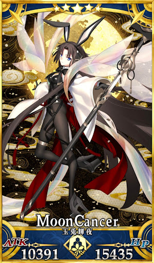
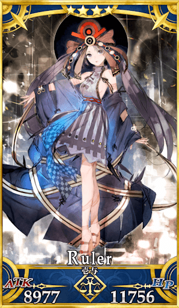
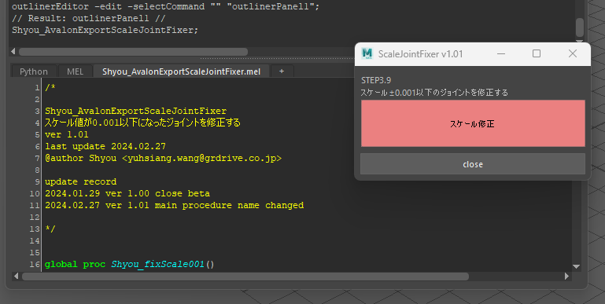
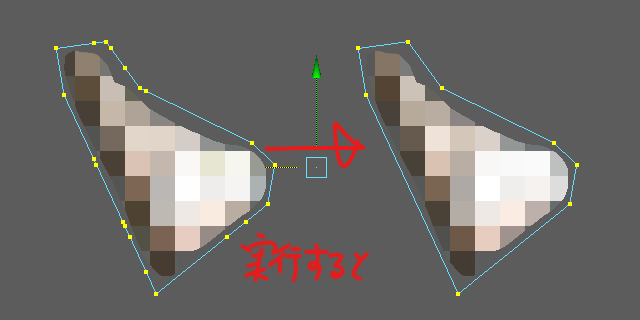

Motion Designer
音羽 翔 OTOHA SHO
F/GO Character Motion & Technical Solutions
モーション表現の追求から、リグ構築、スクリプト開発によるワークフロー改善まで一貫して担うハイブリッドな制作スタイルが強みです。アーティストとしての表現力とエンジニアリングの技術力の両輪で、プロジェクトの課題を解決へと導きます。

Motion Designer
モーション表現の追求から、リグ構築、スクリプト開発によるワークフロー改善まで一貫して担うハイブリッドな制作スタイルが強みです。アーティストとしての表現力とエンジニアリングの技術力の両輪で、プロジェクトの課題を解決へと導きます。
project F/GO 制作実績 (2020〜2026)
ハイブリッドなスキルセットによる課題解決能力
繊細なデザイン意図を汲み取った高品質なモーション制作と、アニメーターが使いやすい堅牢なリグ構築。ディレクターから一発OKを引き出すクオリティコントロール。
Maya MELを用いた自動化ツールの開発。Gemini等のAIを積極的に活用し、未経験領域の言語仕様も迅速にキャッチアップして要件定義から最速で実装する能力。
後進の育成、技術的サポート、メンタリング。困難なフィードバックに対する具体的な解決策の提示を通じたチーム全体の納品クオリティの担保。
ピックアップ実績とチームへの貢献

原作の繊細なデザイン意図を深く理解し、モデルとモーションへ精密に落とし込みました。極めて高いクオリティラインが要求される中、初回の提出でディレクターの承認を獲得。リテイク工数をゼロに抑えることで、スケジュールの短縮とプロジェクト全体の品質向上に大きく貢献しました。
他メンバーが担当した霊基1・2のリグおよびモーション制作において、技術的サポートとメンタリングを実施しました。特に難易度の高い霊基2の「着物のウェイト・制御」に関する高度なフィードバックに対し、的確な技術的解決策を自ら提示して直接サポートしました。個人の制作だけでなく、チームのボトムアップにも貢献しています。

アクロバットなモーションが多く要求されるキャラクターデザインに対し、破綻のない滑らかな動きを実現するアニメーション制作を担当しました。説得力のある回転表現や体重移動を再現するため、オリンピックの体操競技の動画を徹底的にリファレンスとして分析し、ダイナミックでありながらキャラクターの個性を損なわないモーションへと落とし込みました。
イベント配布キャラクターとして多くのプレイヤーが実際に操作し目にする機会が多い中、実装後にはプレイヤーからモーションに関する多数のポジティブなフィードバックを獲得。ユーザーのゲーム体験価値向上に直接貢献しました。
エンジニアリング視点によるワークフロー改善とツール開発


1アセットあたりの作業工数の削減インパクト